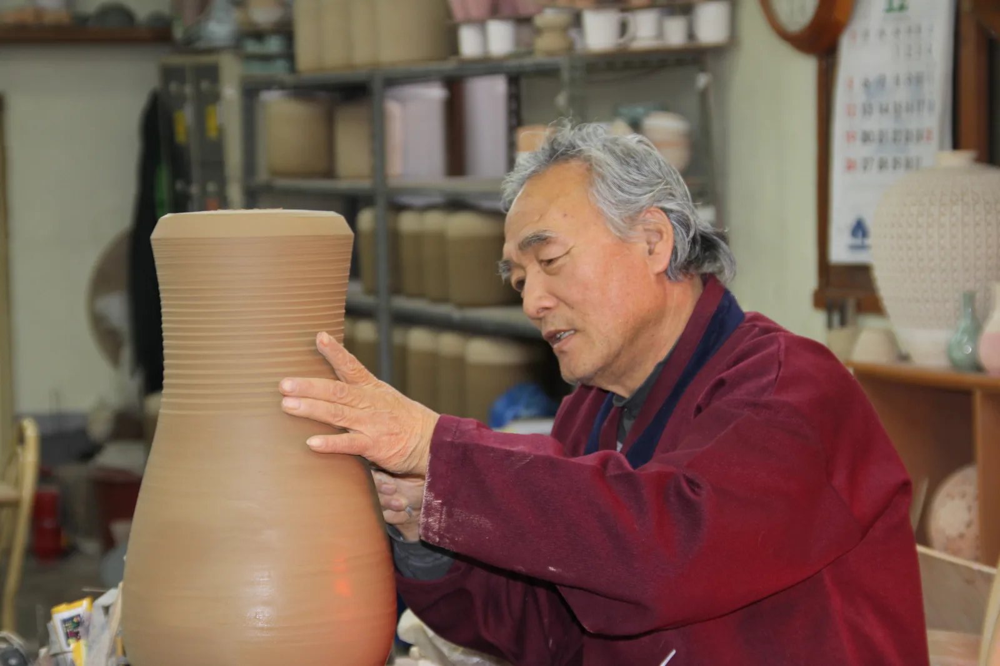
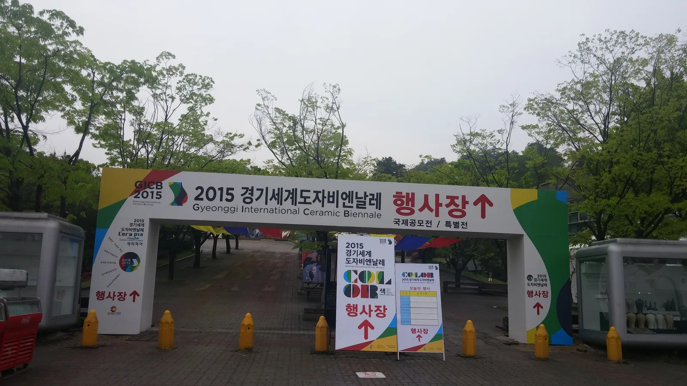
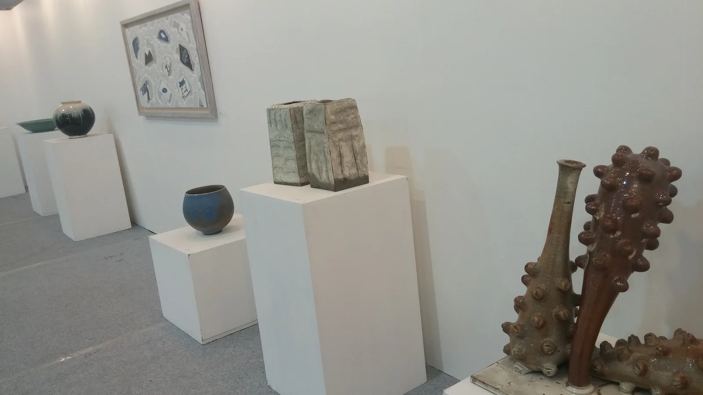
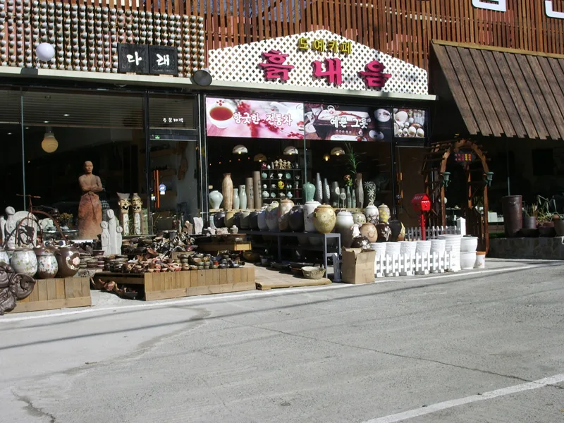
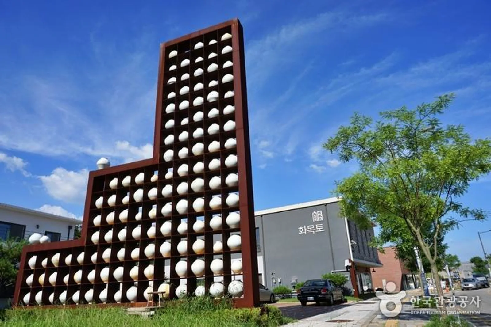
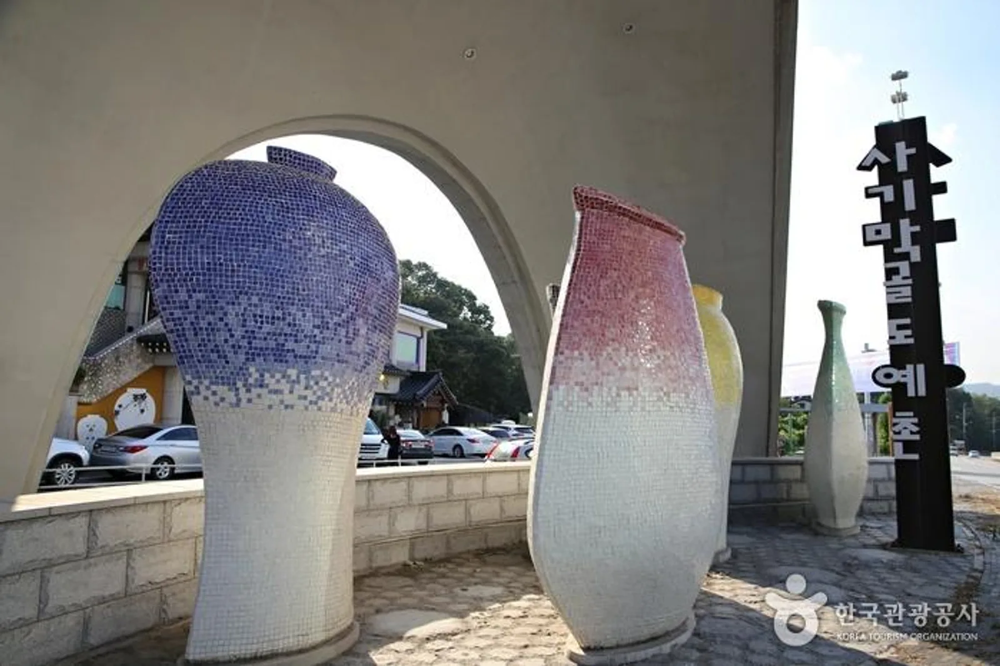
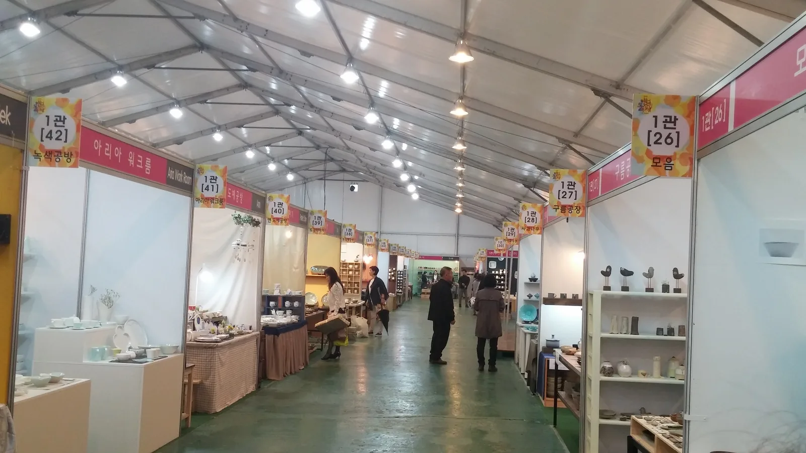

▲ 세라피아(이천세계도자센터)에서 열린 국제도자비엔날레 전시장. 백자 달항아리를 비롯한 국내외 작가들의 도자 작품이 나란히 놓여 있다
경기도 이천은 흔히 '쌀과 도자기의 고장'으로 불린다. 그중에서도 신둔면 일대는 국내 최대 규모의 도예 작가촌인 이천 도자예술마을(예스파크)과 전국에서 유일하게 남은 도자기 전통시장 사기막골도예촌이 나란히 자리한 동네다. 두 마을 사이에는 경기도자미술관과 국제 전시 시설을 갖춘 세라피아(이천세계도자센터)가 있어, 하루 일정으로 도자기의 역사와 실물 체험, 전시 관람을 한 번에 소화할 수 있다. 2026년 4월 24일부터 5월 5일까지는 제40회 이천도자기축제도 열린다. 이 기사는 도자기 역사부터 세라피아 이용 정보, 공방 체험비, 축제 일정, 이천쌀밥 연계 코스까지 방문 순서대로 정리했다.
1. 왜 이천이 '도자기의 수도'가 됐나

▲ 물레 위에서 형태를 잡아가는 이천 도예 장인의 손길. 이천은 질 좋은 백토와 장작 구하기 좋은 산세 덕에 예로부터 가마터가 몰려 있던 지역이다 ⓒ Wikimedia Commons
이천이 도자기 산지로 자리 잡은 배경에는 지리적 조건이 있다. 도자기를 빚기 좋은 백토(白土)가 풍부하고, 가마에 불을 땔 땔감을 구하기 쉬운 야산이 많았으며, 완성품을 실어 나를 수 있는 한강 수운과도 가까웠다. 조선시대부터 관요(官窯)에 도자기를 납품하던 사기장들이 모여들었고, 광복 이후에도 옹기·생활자기를 굽는 가마가 명맥을 이어오다 1970~80년대 이후 전통 도자 명장들이 하나둘 자리를 잡으며 지금의 도예촌 형태를 갖췄다. 현재 이천에는 도자예술마을(예스파크)에 약 200여 공방, 사기막골도예촌에 약 50여 공방이 모여 있어, 두 마을을 합치면 국내에서 가장 밀도 높은 도예 작가촌을 이룬다.
2. 세라피아(이천세계도자센터) — 도자기 미술관과 국제 전시의 중심

▲ 세라피아에서 열린 국제도자비엔날레 행사장 입구. '세라피아(Cerapia)'는 도자기(Ceramic)와 유토피아(Utopia)를 합친 이름이다 ⓒ Wikimedia Commons
세라피아는 한국도자재단이 운영하는 도자 전문 복합시설로, '도자기로 만든 유토피아'라는 뜻을 담아 2001년 문을 열었다. 경기도자미술관을 중심으로 창작레지던시·공방·아트숍·도자도서관 등이 설봉공원 인근에 모여 있으며, 2년마다 열리는 경기도자비엔날레의 주 무대이기도 하다. 마침 2026년 9월 18일부터 11월 1일까지는 13회째를 맞는 '2026 경기도자비엔날레'가 이천·광주·여주 일원에서 45일간 열려, 방문 시기에 따라 특별전을 함께 볼 수 있다. 미술관에서는 국내외 작가들의 현대 도자 작품부터 전통 청자·백자 계보를 잇는 기획전까지 상설·특별전이 함께 열린다.

▲ 좌대마다 놓인 도자 작품들. 전통 형태의 항아리부터 실험적인 조형까지 폭넓은 스타일이 한 전시장에서 소개된다 ⓒ Wikimedia Commons
세라피아(경기도자미술관) 관람시간은 화요일~일요일 10:00~18:00(입장마감 17:00)이며, 매주 월요일과 1월 1일·설·추석 연휴는 휴관한다(월요일이 공휴일이면 다음 날 휴관). 평상시 개별 관람료는 성인 3,000원, 초등학생·청소년·군인 2,000원이며 경기도민은 1,000원으로 할인되지만, 2026 경기도자비엔날레 기간(9.18~11.1)에는 특별전 요금이 적용돼 이천 개별권 6,000원(예매 3,500원), 만 7~18세·경기도민 등 할인 대상 3,500원(예매 2,000원), 이천·광주·여주 3개관 통합권은 1만 1,000원(예매 7,000원)으로 오른다. 미취학 아동, 65세 이상, 국가유공자, 기초생활수급대상자, 현역 군인, 장애인(1~6급) 본인과 동반 보호자 1인 등은 시기와 무관하게 무료 관람이 가능하다. 흙을 직접 만져볼 수 있는 체험 프로그램도 운영되므로, 미술관 관람과 체험을 함께 묶어 반나절 코스로 계획하기 좋다.
경기관광포털에서 세라피아 상세 정보 확인 가능3. 도자기마을 공방·체험 — 예스파크와 사기막골도예촌

▲ 이천 도자기마을 거리의 공방 겸 판매점. 컵·그릇부터 대형 항아리까지 직접 구운 작품을 앞마당에 진열해 놓는 곳이 많다 ⓒ Wikimedia Commons
신둔면 일대의 이천 도자예술마을(예스파크)은 약 200여 공방이 들어선 국내 최대 규모 도예 작가촌이다. 작가별로 개성이 뚜렷해 청자·백자 같은 전통 기법을 잇는 공방부터 생활자기, 현대적 오브제를 만드는 공방까지 스타일이 다양하다. 반면 사암동에 있는 사기막골도예촌은 전국에서 유일하게 남은 도자기 전통시장으로, 3대째 가업을 잇는 '도월요' 같은 전통 공방부터 젊은 작가들의 스튜디오까지 약 50여 공방이 모여 있다. 예스파크보다 규모가 작아 도보로 둘러보기 편하다는 점이 특징이다.

▲ 예스파크 카페거리 인근 '화목토' 앞에 설치된 대형 도자 조형물. 흰 달항아리 형태의 오브제 수십 점이 진열장처럼 층층이 놓여 있다 사진=한국관광공사, 이천시청 제공

▲ 사기막골도예촌 입구를 지키는 대형 모자이크 항아리 조형물. 아치 구조물 아래로 마을 진입로가 이어진다 사진=한국관광공사, 김수진(여행작가)
두 마을 대부분의 공방에서는 예약제로 물레 성형 체험을 운영한다. 강사의 시범을 본 뒤 물레 앞에 앉아 중심 잡기부터 형태 만들기까지 직접 해보는 방식으로, 체험비는 보통 1인 15,000~40,000원 선이다. 난이도, 체험 시간, 완성품 크기와 후가공(유약·소성) 포함 여부에 따라 가격 차이가 있어 예약 전 확인이 필요하다. 완성된 작품은 건조와 초벌·재벌 소성을 거쳐야 하므로 당일 바로 받기보다는 2~4주 뒤 방문 수령하거나 택배로 받는 경우가 많다. 물레 체험 외에도 흙 놀이, 핸드페인팅(그릇에 그림 그리기) 등 아이와 함께할 수 있는 체험도 다양하다.
지역N문화에서 사기막골도예촌 소개 확인 가능4. 2026년 제40회 이천도자기축제 — 4월 24일~5월 5일

▲ 공방별 부스가 늘어선 이천도자기축제 전시홀. 작가와 직접 대화하며 작품을 고를 수 있는 것이 축제의 매력이다 ⓒ Wikimedia Commons
제40회 이천도자기축제는 2026년 4월 24일(금)부터 5월 5일(화)까지 이천도자예술마을(예스파크)과 사기막골도예촌 일원에서 열린다. 어린이날 연휴까지 이어지는 일정이라 가족 단위 방문객이 몰리는 시기다. 입장료와 주차는 무료로 운영되며, 900m에 이르는 동선을 따라 300여 개 공방이 참여해 마을 전체를 거닐며 작가들과 직접 만날 수 있는 '체류형 축제'로 꾸며진다.
40주년을 맞은 이번 축제에는 이천을 대표하는 도예 명장들의 작업 현장을 직접 볼 수 있는 명장의 작업실, 축제 40년 역사를 돌아보는 기념 아카이브관, 물레로 나만의 그릇을 빚어보는 체험, 전통 도예와 인공지능(AI) 창작을 접목한 팝업 전시, 도슨트와 함께하는 갤러리 투어 등이 마련된다. 소상공인 플리마켓과 도자문화마켓 같은 지역 연계 프로그램도 함께 열려, 단순 판매전을 넘어 마을 전체를 즐기는 축제로 자리 잡았다. QR코드 기반 모바일 지도와 셔틀버스도 운영되니 방문 전 공식 홈페이지에서 최신 공지를 확인하는 것이 좋다.
이천도자기축제 공식 사이트에서 확인 가능5. 입장료·체험비·가는 법 — 이천쌀밥까지 묶은 하루 코스
| 항목 | 내용 |
|---|---|
| 세라피아(경기도자미술관) 입장료 | 평상시 성인 3,000원·청소년/군인 2,000원·경기도민 1,000원 / 2026 경기도자비엔날레 기간(9.18~11.1)엔 이천 개별권 6,000원(예매 3,500원) |
| 세라피아 무료 대상 | 미취학 아동, 65세 이상, 국가유공자, 기초수급대상자, 장애인 1~6급(동반 1인) |
| 세라피아 관람시간 | 화~일 10:00~18:00(입장마감 17:00), 매주 월요일·1월 1일·설/추석 연휴 휴관 |
| 세라피아 주소·문의 | 경기 이천시 경충대로2697번길 167-29 / 031-631-6501 |
| 물레 성형 체험비 | 1인 15,000~40,000원(난이도·시간·후가공 여부에 따라 상이, 예약 필수) |
| 2026 이천도자기축제 | 4월 24일(금)~5월 5일(화), 입장료·주차 무료 |
| 도자예술마을(예스파크) | 공방 약 200여 곳, 경기 이천시 신둔면 일대 |
| 사기막골도예촌 | 공방 약 50여 곳, 경기 이천시 사음동 일대 |
도자기마을과 세라피아는 차량으로 5~10분 거리에 모여 있어 하루 일정으로 묶기 좋다. 오전에는 세라피아에서 도자 전시를 둘러보고, 점심은 이천 시내나 신둔면·마장면 일대의 이천쌀밥정식으로 해결한 뒤, 오후에는 도자예술마을이나 사기막골도예촌에서 공방을 돌며 물레 체험까지 이어가는 코스가 대표적이다. 이천쌀밥정식은 갓 지은 돌솥밥에 된장찌개·나물반찬·제육볶음 등이 곁들여지는 구성으로, 고급 한식의 대명사로 꼽힌다. 도자기 체험 후 허기를 채우기에도, 도자기를 고르기 전 여유 있게 둘러보기에도 잘 어울리는 동선이다.
투어코리아에서 이천 맛집·여행지 정보 확인 가능✅ 이천 도자기마을·세라피아, 가기 전 체크리스트
· 이천은 백토·땔감·한강 수운이 갖춰진 전통 도자 산지, 신둔면 일대에 도예촌 형성
· 세라피아(이천세계도자센터)는 경기도자미술관·창작레지던시를 품은 도자 복합시설, 경기세계도자비엔날레 주 무대
· 세라피아 입장료는 평상시 성인 3,000원·청소년 2,000원, 비엔날레 기간(9.18~11.1)엔 개별권 6,000원, 관람시간 화~일 10:00~18:00(입장마감 17:00), 월요일 휴관
· 도자예술마을(예스파크) 약 200여 공방, 사기막골도예촌(전국 유일 도자기 전통시장) 약 50여 공방
· 물레 성형 체험비는 1인 15,000~40,000원 선, 예약 필수, 완성품은 2~4주 뒤 수령
· 2026년 제40회 이천도자기축제는 4월 24일~5월 5일, 입장료·주차 무료
· 세라피아~도자기마을은 차량 5~10분 거리, 이천쌀밥정식과 묶어 하루 코스로 추천